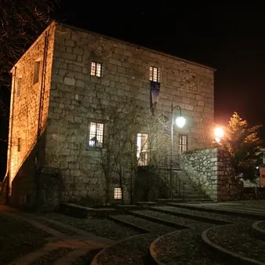

da dom 13 dic a dom 17 gen
La magia del Natale: Presepi a Moggio - "A Moggio la Stella" - I presepi presso la Torre medievale
La magia del presepe tra storia e tradizione La rassegna presepistica, nata da un concorso dedicato, espone opere inedite e di grande fascino realizzate da bambini, adulti, artisti e gruppi.Il cuore dell'evento è la Torre Medievale o Torre delle Prigioni, parte del complesso…
 Indicazioni
Indicazioni
- Costi e prenotazioni
- Costo non indicato · Prenotazione non indicata
- Programma
- Programma da verificare. Apri la fonte ufficiale per orari e possibili aggiornamenti.
- In caso di maltempo
- Nessuna indicazione specifica pubblicata.
- Note
- Acquisito automaticamente dalla fonte.
L’EVENTO
Descrizione completa
La rassegna presepistica, nata da un concorso dedicato, espone opere inedite e di grande fascino realizzate da bambini, adulti, artisti e gruppi.Il cuore dell'evento è la Torre Medievale o Torre delle Prigioni , parte del complesso storico dell' Abbazia di San Gallo Abate , dove i presepi sono allestiti sui tre piani dell'edificio. L'esposizione prosegue nell'Abbazia, negli spazi esterni della Torre e lungo la suggestiva Via dei Presepi , che coinvolge il centro del paese con opere ospitate nelle vetrine dei negozi e presso la Chiesa della Trasfigurazione . Un apposito depliant guiderà i visitatori lungo l'intero percorso, alla scoperta di tutti i presepi della rassegna.
DOVE
Rassegna presepi
Torre Medievale e Abbazia di San Gallo Abate
Complesso storico abbaziale di Moggio Alto
“Via dei Presepi”
lungo le vie di Moggio Basso nelle vetrine dei negozi da Piazza Uffici a Via Chiesa
Chiesa della Trasfigurazione
Via Chiesa, Moggio Basso
QUANDO
Rassegna presso Torre Medievale e complesso abbaziale
Domenica 13 dicembre 2026 ore 14.30 - 18.30
Dal 22 dicembre 2026 al 10 gennaio 2027
tutti i giorni escluso il Lunedì ore 14.30 - 18.30
16 - 17 gennaio 2027
ore 14.30- 18.30
VISITE GUIDATE
Si effettuano visite guidate gratuite (italiano, tedesco, friulano) per gruppi da 4 a 50 persone, anche fuori dagli orari
di apertura, previa prenotazione ai contatti riportati nelle INFO
VIABILITÀ
Accesso per pullman al Complesso abbaziale dal centro paese o da Via Rute (lunghezza max 11 metri)
Parcheggi per Torre Medievale: area antistante l’Abbazia
Parcheggi per Moggio Basso: centro paese e, per i pullman, nell'area antistante la Pizzeria Corte dei Miracoli
FAMILY EXPERIENCE
Previste attività specifiche dedicate alle famiglie e ai bambini, tra cui il “Cammina Presepi”, passeggiate per bambini e famiglie; il 24 dicembre “Arriva Babbo Natale” e il 6 gennaio “Viva viva la Befana”. Dettagli programma sul sito www.presepifvg.it e ai contatti riportati nelle INFO
IL PROGRAMMA
Programma e orari
Appuntamenti raccolti dalle fonti elencate. Dove manca un orario, non è ancora disponibile in questa scheda.
Programma pubblicato
- ore 14.30 - 18.30
INFORMAZIONI UTILI
Prima di partire
- Controllare la fonte prima di partire.
ORGANIZZAZIONE